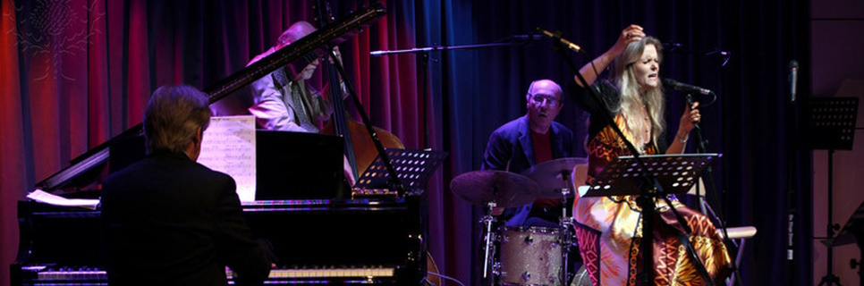
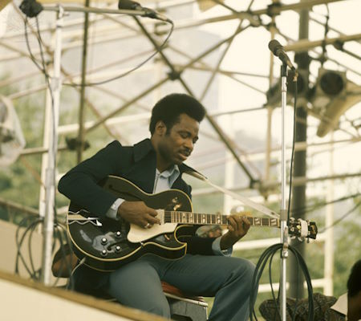
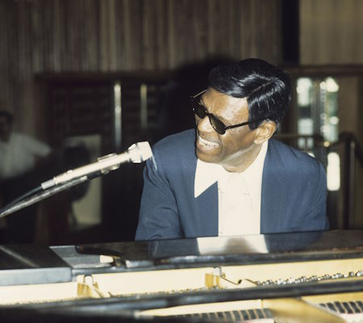
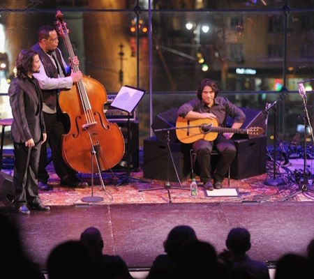
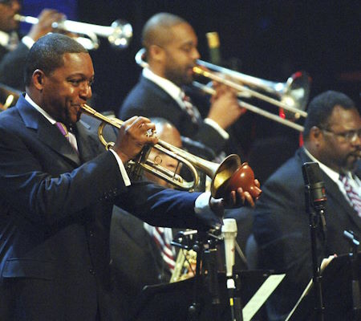
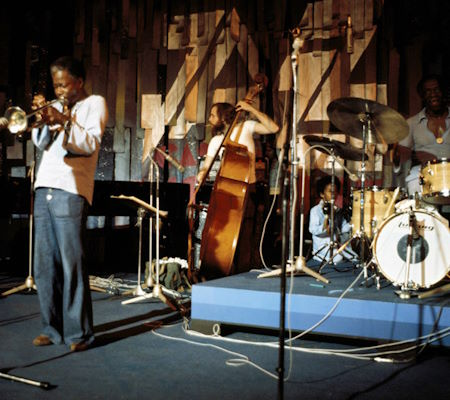

|  |
| Image A01: Tierney Sutton performs with the Alan Broadbent Trio at The Grammy Museum |
| Jazz: An Introduction |
| Home |
Listening
|
Links
|
|
| Welcome |
|
Welcome to my small, digital corner of the World of Jazz where I hope to provide an introduction to the music genre and key moments in it's history.
To understand and appreciate jazz it is best to immerse yourself in the music.
For comparison, one can read all about art, its history and famous painters and how they contributed to art development,
but without looking at a painting or scultpure, it would be really difficult to appreciate it, or compare the difference between two artists based on a written description alone.
Similary, while I hope to provide summary information about jazz, it's history and famous artists, I would suggest you spend more time listening to the
music linked through out this site.
As a suggestion, why not listen to song you find interesting in my Listening or
Links sections, then come back to read the content below?
|
 |
| Image A02: George Benson, a famous jazz guitarist, performing live onstage |
| What is Jazz? |
Top |
|  |
One dictionary definition of jazz is that it is American music that evolved from ragtime and blues which is typically played by a group of musicians. It is characterized by its rhythms and incorporates solos, often improvised. Text: A031
However, jazz isn't so easily definable, ever-changing in style and growing in performers and listeners since the late 19th century, today jazz is performed and appreciated all over the world and has over 50 sub-genres. Text: A032
Even artists and listeners struggle to define the genre, and revert to the more philosophical, "If jazz means anything, it is freedom of expression..." according to Duke Ellington, a famous jazz artist and composer. Text: A033
While difficult to define, most agree that jazz's sound is distinctive from other music. Text: A034
|
| Image A03: Earl Hines, a famous jazz pianist, performing live onstage |
| Brief History |
Top |
|
Similar to its definition, jazz history avoids a simple summary, and although distinct era's exist, they overlap and borrow musical ideas from each other.
It is generally agreed that jazz originated in New Orleans towards the end of the 19th and beginning of the 20th centuries.
An American port city, New Orleans was home to many diverse cultures, with many contributing to jazz's early development.
However, it is the African American community which is largely accredited with the birth of jazz, with its Rhythm, Blues and Gospel musical influences, still elemental to jazz music today. Text: A041
|
 |
| Image A04: Dancer Juan de Juan, and jazz musicians John Benitez, Nino Josele and Horatio Hernandez |
| Jazz Eras |
Top |
|  |
From its birth in the late 19th century, the sound of jazz has changed over the years with significant evolutionary turns broadly reflected by it's eras.
Marking jazz's infancy, 1920s jazz has a repetitive feel as bands were small and had similar instrumentaiton. Tunes were learnt by ear, improvization was usually based on the melody and harmonies were simple.
The 1930s saw the end of prohibition and demand for jazz bands in dance halls surged. Big band composers matured jazz music composition and the era also observed the soloists and vocalists departing from the melody during improvization.
In the 1940s, smaller and more varied bands arose and challenging instrumental solos were favoured over vocal melodies. Tempos increased and harmony became much more complex.
Conversely in the 1950s, Cool jazz reverted to slower tempos and less frenetic melodic lines, however retaining the harmonic complexity developed in the previous era.
The 1960s developed sounds and themes that still resonant in jazz today and saw the advent of modal jazz (chords sustained over many beats) as well as Latin and Brazillian influences.
1970s Avant Garde jazz musicians tested the limits of acceptable listening with the use of atonal melodies or arryhmic beats, a musically explorative era. Today jazz continues to evolve and it's influences can be felt in all modern music including rock, pop and electronic dance. Text: A051
|
| Image A05: Wynton Marsalis performs at the Jazz At Lincoln Centers Concert |
| Listening |
Top |
|
Within the Listening and Links sections you'll find a variety of audio and video links to jazz music I consider good examples of an era, theme or genre. Do you have a favourite?
|
 |
| Image A06: Art Blakey and his Jazz Messengers band. |
| References |
Top |
|
Image A01
Sapp, R. (no date) The GRAMMY Museum Salutes The Jazz Bakery. Available at: https://quest-eb-com.libezproxy.open.ac.uk/images/search/Tierney%20Sutton%20performs/detail/115_2751786, (Accessed: 10 May 2024)
Image A02
Redfern, D. (no date) Photo of George BENSON. Available at: https://quest-eb-com.libezproxy.open.ac.uk/images/search/jazz/detail/115_2750768, (Accessed: 10 May 2024)
Image A03
Redfern, D. (no date) Earl Hines Performs On Stage. Available at: https://quest-eb-com.libezproxy.open.ac.uk/images/search/jazz%20piano/detail/115_2751160, (Accessed: 10 May 2024)
Text: A031
Jazz (no date). Available at: https://www.merriam-webster.com/dictionary/jazz (Accessed: 11 May 2024).
Text: A032
List of jazz genres (04th March 2024). Available at: https://en.wikipedia.org/wiki/List_of_jazz_genres (Accessed: 11 May 2024).
Text: A033
What is Jazz (no date). Available at: https://jazz.org/education/school-programs/let-freedom-swing/what-is-jazz/#:~:text=%E2%80%9CIf%20jazz%20means%20anything%2C%E2%80%9D,led%20for%20half%20a%20century. (Accessed: 11 May 2024).
Text: A034
jazz (20th March 2024). Available at: https://www.britannica.com/art/jazz (Accessed: 11 May 2024).
Image A04
Loccisano, L. (no date) Jazz Meets Flamenco. Available at: https://quest-eb-com.libezproxy.open.ac.uk/images/search/jazz/detail/115_3939780, (Accessed: 10 May 2024)
Text: A041
A Brief History of Jazz (22 September 2022). Available at: https://www.levinemusic.org/about/news/a-brief-history-of-jazz/ (Accessed: 11 May 2024).
Image A05
Barket, B. (no date) Jazz At Lincoln Centers Concert For Hurricane Relief. Available at: https://quest-eb-com.libezproxy.open.ac.uk/images/search/jazz/detail/115_2752235, (Accessed: 10 May 2024)
Text: A051
The Eras & History Of Jazz Music (10 August 2021). Available at: https://www.greatertorontomusic.ca/post/the-eras-history-of-jazz-music (Accessed: 11 May 2024).
Image A06
Putler, A. (no date) Photo of JAZZ MESSENGERS and Art BLAKEY. Available at: https://quest-eb-com.libezproxy.open.ac.uk/images/search/jazz/detail/115_2751127, (Accessed: 10 May 2024)
|
|